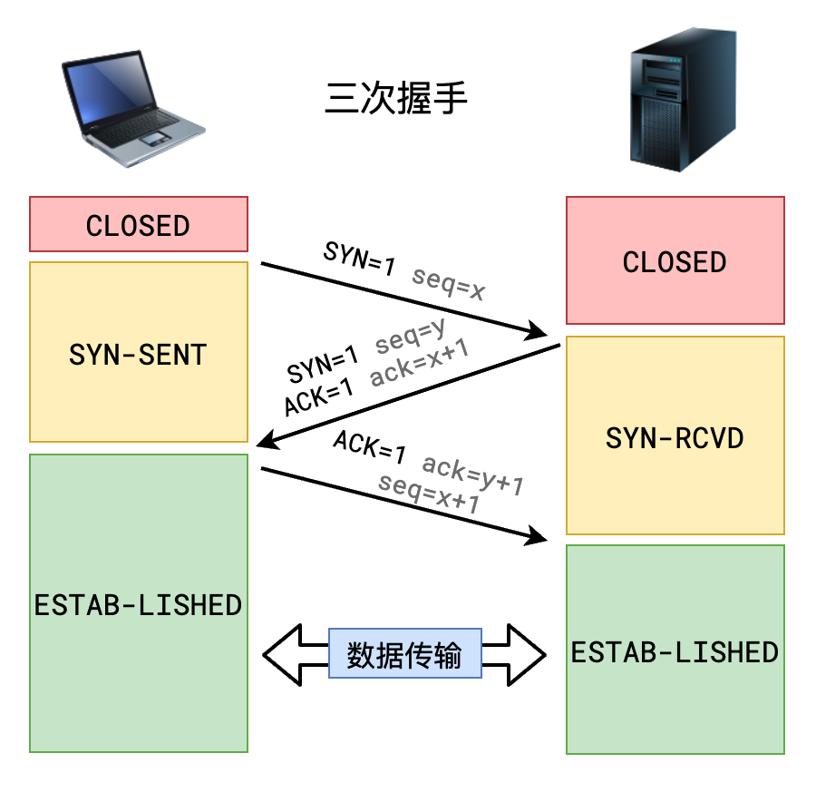
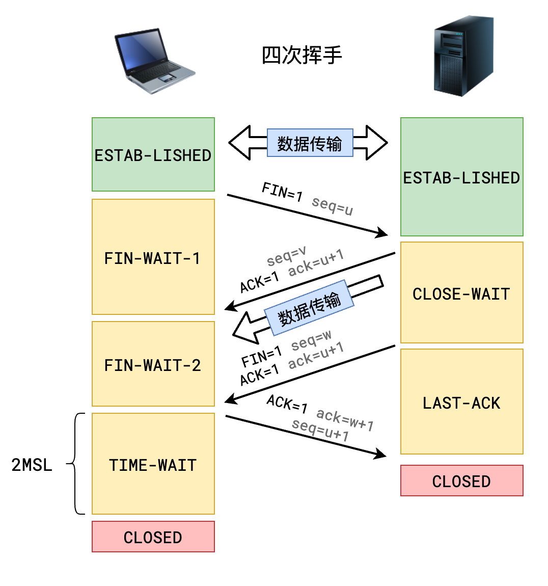
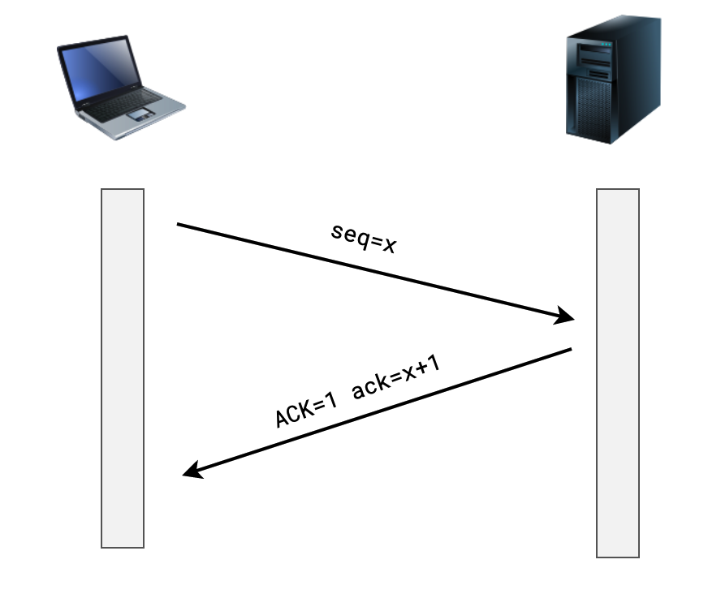

前端知识整理-网络篇
网络五层模型
分层有什么意思：当遇到复杂问题时，可以通过分层的思想来简化。
一开始是网络4层模型，后台国际标准化组织OSI（Open System Interconnection Reference Model）提出了网络7层模型，网络7层模型只是一个理想化的标准，现实中大多公司采用的是网络5层模型，网络5层模型如下：
应用层
主要面向互联网中的应用场景，比如网页、邮件、文件中心等等；它的代表协议有 http、smtp、pop3、ftp、DNS 等。
传输层
主要面向传输过程，比如采用哪种协议来实现可靠传输；它的代表协议有 TCP、UDP等。
网络层
主要作用是在传输网络中定位目标和寻找最优路径；代表协议IP等。
数据链路层
是在一个子网或者广播域中传输；MAC地址、交换机属于该层。
物理层
将二进制数据进行信号传输；光线、双绞线、电缆等设备属于该层。
常见的请求方法
在 HTTP 协议中，不同的请求方法只是包含了不同的语义，但服务器和浏览器的一些约定俗成的行为造成了它们具体的区别，在http的请求行中第一个单词表明请求方法。
GET
表示向服务器获取资源，业务数据在请求行中，无须请求体。GET请求只能传递 ASCII 数据，遇到非 ASCII 数据需要进行编码。
POST
表示向服务器发送数据，通常用于产生新的数据（比如注册）；业务数据在请求体中。
PUT
表示希望修改服务器数据，业务数据在请求体中。
DELETE
表示希望服务器删除指定资源，业务数据在请求行中，无须请求体。
TRACE
回显服务器收到的请求，主要用于测试和诊断。
OPTIONS
发生在跨域的预检请求中，表示客户端向服务器申请跨域提交。
Cookie
cookie是浏览器中特有的一个概念，它就像浏览器的专属卡包，管理着各个网站的身份信息。一般一个域下的cookie不能超过4KB。
cookie 设置于修改
服务器通过在响应头中设置一个名为 Set-Cookie 的响应头来携带cookie信息，浏览器会自动将cookie信息存储并在后续的请求中带上这个 cookie。
1 | /** |
cookie的优缺点
- 优点：浏览器自动保存和携带，兼容性好所有浏览器都支持。
- 缺点：单域下不能超过4KB，而且可能会发生CSRF（Cross-Site Request Forgery）攻击。
Storage
因为Cookie的缺点，所以HTML5 新增了Storage。S浏览器对Storage不会有默认行为，Storage只与域相关不与path相关，一般大小在5M-10M。
分为SeesionStorage和LocalStorage，前者是会话级别的(会话结束则失效)，后者是持久化的。
Storage设置
1 | // sessionStorage |
Storage优缺点
- 优点：可存储容量大，更加安全。
- 缺点：没有浏览器默认行为，需要手动设置；对老版本的浏览器兼容性差（2014年10，HTML5作为稳定W3C推荐标准发布）。
通源策略
浏览器有一个重要的安全策略，称之为「同源策略」。
其中，$源=协议+主机+端口$，两个源相同，称之为同源，两个源不同，称之为跨源或跨域，浏览器会对跨域资源访问进行限制（ajax请求严格限制，img资源不受限制）。
| 源 1 | 源 2 | 是否同源 |
|---|---|---|
| http://www.baidu.com | http://www.baidu.com/news | ✅ |
| https://www.baidu.com | http://www.baidu.com | ❌ |
| http://localhost:5000 | http://localhost:7000 | ❌ |
| http://localhost:5000 | http://127.0.0.1:5000 | ❌ |
| http://www.baidu.com | http://baidu.com | ❌ |
| 跨域的解决一般有代理、cors和jsonp等几种方案。 |
代理（常用）
适用于生产环境不跨域，但是开发环境跨域的情况。利用代理服务器，将请求转到同源服务器，由同源服务器转发请求给真正的后台服务器，从而获取资源。
1 | /** |
CORS:（常用）
CORS是基于http1.1的一种跨域解决方案，它的全称是Cross-Origin Resource Sharing（跨域资源共享）。是基于HTTP头的机制，该机制通过服务器在响应中设置特定的HTTP头，允许浏览器与服务器进行交互，从而实现跨域数据共享。
CORS针对简单请求、预检请求和携带身份凭证的请求需要做不同处理。
- 简单请求
简单请求需要包涵一下几个要求：
- 请求方法必须是GET、POST、HEAD这3种；
- 请求的头只能包含Accept、Accept-Language、Content-Language、Content-Type、DPR、Downlink、Save-Data、Viewport-Width、Width这些常见的安全字段
- 请求头如果包含Content-Type，仅限text/plain、multipart/form-data、application/x-www-form-urlencoded。
简单请求CORS前后端处理：1
2
3
4// 前端
1. 浏览器判断是简单请求，会在请求头中自动添加一个字段：Origin，值为当前页面的域名。（Origin: http://www.my.com）
// 后端
1. 后端响应头中添加一个字段：Access-Control-Allow-Origin，值为请求头中的Origin字段的值或者是*（*表示服务器接受任何域）。
预检请求
当客户端发送一个非简单请求时，浏览器会先发送一个预检请求给服务器；服务器响应预检请求，如果服务器允许，那么客户端才会发送真正的请求。1
2
3
4
5
6
7
8
9
10
11
12
13
14// 客户端发送预检请求（预检请求没有请求体）
OPTIONS /api/user HTTP/1.1 // 请求行：请求方法为OPTION
Host: crossdomain.com
Origin: http://www.my.com
Access-Control-Request-Method: POST // 后续的真实请求的HTTP方法为POST
Access-Control-Request-Headers: a, b, content-type // 后续的真实请求的HTTP头包涵a、b、content-type
// 后端响应预检请求
HTTP/1.1 200 OK
Date: Tue, 21 Apr 2020 08:03:35 GMT
Access-Control-Allow-Origin: http://www.my.com
Access-Control-Allow-Methods: POST // 允许的HTTP方法
Access-Control-Allow-Headers: a, b, content-type // 允许的HTTP头
Access-Control-Max-Age: 86400携带身份凭证的请求
默认情况下，跨域请求不会携带cookie信息，但是可以通过手动设置。1
2
3
4
5
6
7
8
9
10// 客户端请求
// xhr
var xhr = new XMLHttpRequest();
xhr.withCredentials = true;
// fetch api
fetch(url, {credentials: 'include'});
// 服务器响应
Access-Control-Allow-Credentials: true // 允许客户端携带cookie信息
Access-Control-Allow-Origin: http://www.my.com // 注意对于携带cookie的请求，服务器消息头的Allow-Origin的值不能为*。
jsonp（过时）
jsonp是通过script标签实现的，但是由于script标签的src属性是只读的，所以只能用于获取数据，不能用于发送数据。
1 | // 前端 |
TCP/UDP
TCP
协议属于传输层协议。其中TCP提供IP环境下的数据可靠传输，它提供的服务包括数据流传送、可靠性、有效流控、全双工操作和多路复用。
- TCP三次握手
- 客户端向服务器发情握手请求：SYN = 1 // 同步请求
- 服务器向客户端发回握手响应：ACK = 1，// 回应客户端的请求，SYN = 1， // 同时服务器也向客户端发起同步请求
- 客户端向服务器发回握手响应：ACK = 1，// 至此TCP三次握手完成，连接建立。

- TCP四次挥手
- 客户端向服务器发起断开链接请求：FIN = 1
- 服务器向客户端响应：ACK = 1
- 服务器向客户端发送断开请求：ACK = 1，FIN = 1
- 客户端向服务器响应：ACK = 1

- TCP数据发送
- 分段发送
TCP 会按照一定的长度（MSS）切分需要发送的数据，并对每个分段添加头部信息（一般包含序号、确认信息等），然后根据顺序发送。 - 可靠传输
TCP发送数据，都会等待对方确认，如果确认失败会重传数据，这样确保了数据传输的正确性。
1
2
3- seq：表示这次数据报的序号
- ACK：表示这次数据报是一个确认数据报
- ack：表示期望下一次接收的数据报序号UDP
UDP协议属于传输层协议，它是一种无连接的协议，它不需要建立连接，就可以向对方发送数据，所以它也称为无连接协议。
UDP是不可靠的传输协议，需要应用层自己实现可靠传输；优点是速度快。一般用于视频流、实时聊天、聊天室等实时性要求高的场景。
网络性能优化
打包优化
- 多目标打包（比如Babel，vue 添加modern）
利用打包插件，针对不同版本浏览器打包兼容版本 - 压缩（GZIP）
减少打包体积 - CDN
加快静态资源的加载速度。 - 雪碧图
减少请求图片的次数 - 资源提示关键词
defer、async、preload、prefetch - http2
HTTPS
SSL/TLS (TLS是SSL的升级版，两者几乎一样)
SSL/TLS协议是加密传输协议，它提供了一个安全的加密层，使得传输的数据不会被窃听。
http版本
http1.0
http1.1
http2
http3